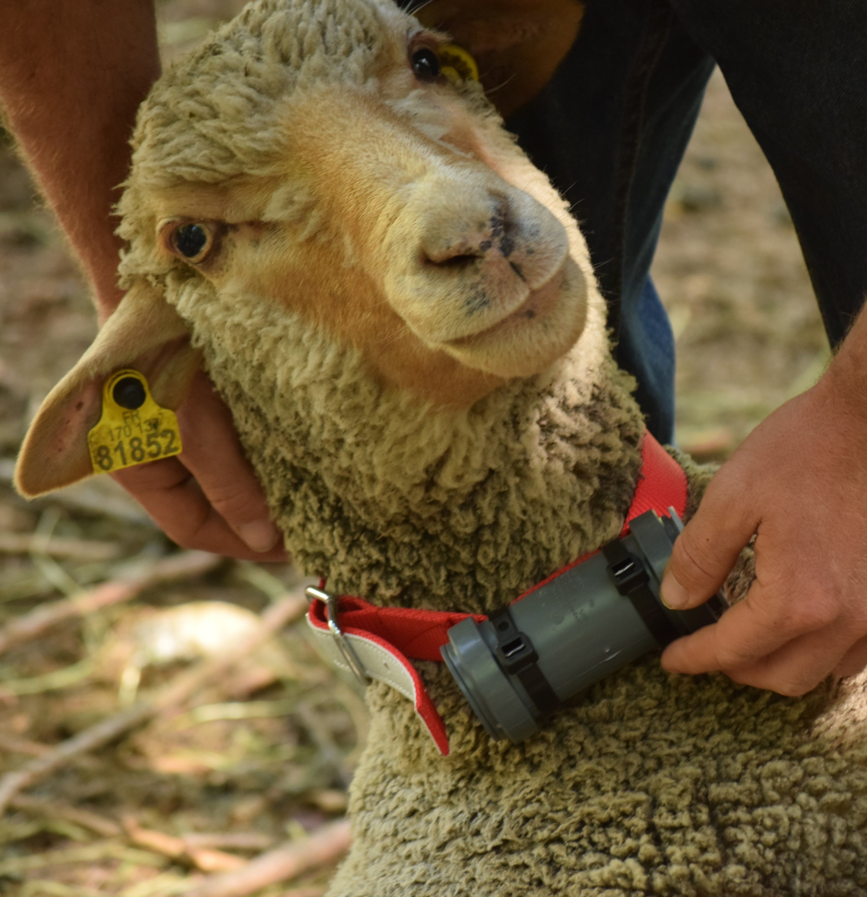
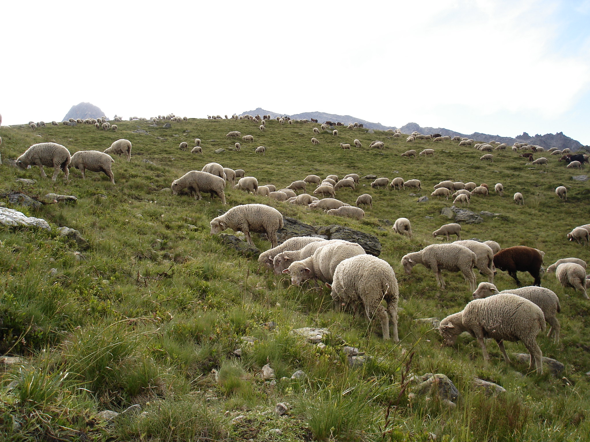

Traitement GPS

1. Déplacement
Le déplacement des brebis est suivi au moyen de colliers GPS qui enregistrent la position toutes les 2 à 30 minutes, selon le jeu de données. Chaque collier intègre une sonde thermique et pour certains des accéléromètres. Leur autonomie couvre toute la saison d’estive, sans intervention nécessaire. Il n’y a pas de transmission des données en temps réel. Avec 6 à 8 animaux équipés, on décrit fidèlement les déplacements d’un troupeau ovin conduit. La méthode est éprouvée sur plusieurs alpages depuis plus de cinq ans.

2. Comportement
Grâce à un outil statistique appelé chaîne de Markov cachée et à l’analyse de la manière dont les positions GPS s’enchaînent dans le temps, il est possible de reconstituer ce que font les animaux tout au long de la journée : se déplacer, brouter ou se reposer.

3. Chargement
L’agrégation à l’échelle du troupeau fournit des informations sur le chargement (en nombre d’animaux par unité de surface et par unité de temps). La charge pastorale peut aussi être estimée par comportement et par habitat.